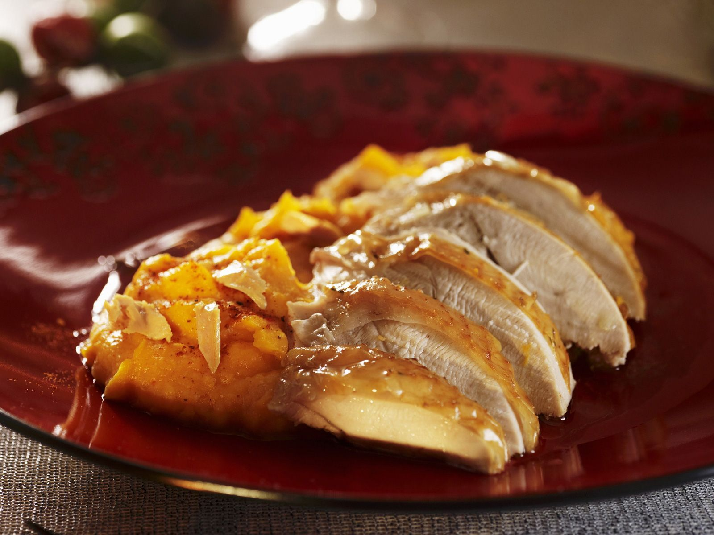

This is one of my absolute favorite comfort meals. It tastes just like Thanksgiving, and you can
have it any time of year!
What you'll need:
- Sous Vide Turkey Breast (one sous vide package, not both!)
- Frozen Sweet Potatos
- Optional BBQ Sauce of your choosing (I prefer G. Hughes sugar free Origianl BBQ)
- Stovetop pan for heating
- Foodsafe bowls for distributing
And now for the cooking instructions:
- Grab your stovetop pan, and set the heat to medium.
- Start heating your frozen sweet potatos in the microwave, according to package instructins. (While the
pan is
heating)
- After 5 minutes (about when the vegetables are done), begin pulling apart the turkey breast, and place
into the hot pan (save the juice from
the package!).
- Once all the turkey has been added, pour the juice over the turkey, to keep it moist.
- Drop the heat to low so you don't overcook the turkey!
- Grab your foodsafe bowls, and evenly split the heated sweet potatos.
- After 4 minutes on heat, evenly distribute the turkey as well.
- Enjoy your meal, and now you also have an equal sized meal for later!
I usually make this at night, and have the second meal for lunch at work, the next day.
Since this one is a little heavier on the carbs, I make this one the night before a cardio
intensive day, so make sure I'm powered up for some endurance!
Here's are the macros break down, as well!
- Total Calories: 400
- Protein: 38g
- Carbs: 38
- Fat: 11